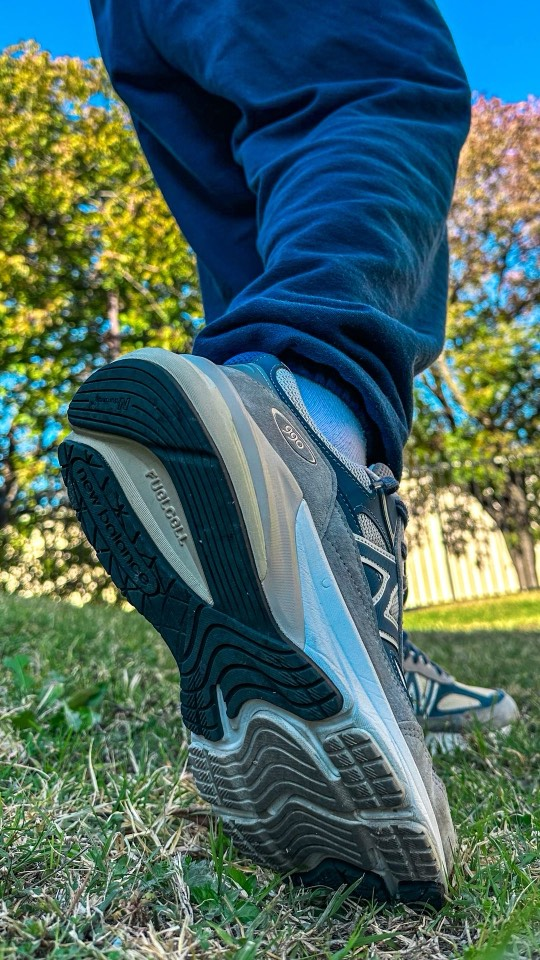

Quanto dura la tua corsa in canzoni?
I chilometri restano quelli. Contati in canzoni pesano meno, perché ascoltare un pezzo che ti piace è una cosa che faresti comunque.
1 La tua canzone
Di tendenza in Italia
2 La tua corsa
Quanto ci metti a fare un chilometro?
Se non lo sai, lascia Normale: è il ritmo di chi corre chiacchierando.
Copia i numeri dalla schermata di fine corsa, come li leggi.
Cambiane due e il terzo si aggiorna da solo.
3 Quante volte
5 km sembrano tanti.
Ma sono 15 volte Sportswear.
Dark Polo Gang · 1:59
Adesso mettila in loop e parti.
Condividi sulle storie
Scegli Instagram, poi Storia.
Tieni premuto sull'immagine (o tasto destro) e salvala nel rullino. Sul sito vero il telefono apre il foglio di condivisione: qui dentro l'anteprima lo blocca.
Come si vede in una storia
![]() Tití Me PreguntóBad Bunny
Tití Me PreguntóBad Bunny
![]() Bohemian RhapsodyQueen · 5:55
5 km sembrano tanti.
Bohemian RhapsodyQueen · 5:55
5 km sembrano tanti.Ma sono 6 volte
Bohemian Rhapsody. inloop.zetakiwi.com Rispondi…

@giulia.corre![]() SportswearDark Polo Gang
SportswearDark Polo Gang
Il concept
Fatto per chi corre con la stessa canzone nelle orecchie. inLOOP prende una distanza e te la ridice in riascolti, poi te la dà pronta da condividere come storia.
La musica viene quindi usata come unità di misura della fatica. È un concept di co-branding ipotizzato su una collaborazione tra Spotify e Strava, e non è affiliato a nessuna delle due: i loro colori stanno qui perché sono il materiale dell'esercizio.
Otto scelte progettuali
spiegate una per una
- Nessuna integrazione con Spotify, e non per pigrizia. Da marzo 2025, per uscire dalla modalità sviluppo dell'API servono 250.000 utenti attivi al mese, e quella modalità ammette cinque utenti. Un concept pubblico avrebbe funzionato per cinque persone. Le canzoni arrivano dall'archivio pubblico di Apple, gratuito e senza chiavi.
- Contrasto verificato con lo standard WCAG 2.1 AA. Il bianco sul verde Spotify arriva a 2,59 su 1, sotto il minimo richiesto di 4,5. Per questo i colori dei due marchi sono usati come sfondo, con il testo scuro sopra. Controllati tutti i testi della pagina: 117 su 117 superano la soglia, con un valore mediano di 15,8.
- Bersagli touch secondo le linee guida Apple. Apple chiede che ogni cosa da toccare misuri almeno 44 punti per 44. Misurati tutti i comandi del sito: 33 su 33 rispettano la misura, e nessuna area di tocco si sovrappone a un'altra. I collegamenti dentro un discorso restano della misura del testo, perché lì la regola non si applica.
- Il flusso segue l'ordine in cui si decide. Prima la canzone, poi la corsa, poi il risultato. Ogni passo ha il suo numero, e i pulsanti portano dove serve: «Cambia canzone» risale alla lista, «Condividi una storia» scende alla sezione delle storie. I valori di partenza sono già impostati, così il risultato esiste dal primo istante e i chilometri restano una rifinitura.
- Lo sticker si monta qui, perché su Instagram non si può. Quando condividi da Spotify, Instagram riceve un adesivo separato e sei tu a spostarlo dentro la storia. Quella scorciatoia esiste solo fra app installate: da un sito è chiusa. Quindi il montaggio si fa prima: carichi la foto, sposti l'etichetta col dito, la rimpicciolisci col pizzico, e alla fine esce l'immagine finita.
- Le visite si contano senza cookie. Per sapere se un progetto viene usato serve un numero, e gli strumenti più diffusi lo prendono con i cookie, che poi obbligano al banner da accettare. Qui le visite le conta Umami su un mio server: nessun cookie, nessuna profilazione, nessun dato che identifichi chi passa. Per questo non c'è nessun avviso da chiudere.
- Le zone sicure di Instagram sono rispettate. Instagram copre i bordi con la barra di avanzamento in alto e il campo «rispondi» in basso. L'etichetta non entra mai in quei 260 pixel, nemmeno trascinandola a fondo corsa, e il limite si ricalcola se la rimpicciolisci.
- Le foto ottimizzate. Le due immagini degli esempi erano scritte nel codice in base64 invece di essere un file, e pesavano un terzo in più. Per gli stessi identici file è stata cambiata la logica di caricamento e la posizione del file, spostandola a quando l'utente si avvicina: la pagina è passata da 453 a 54 KB, otto volte più leggera e quindi più veloce.
Sviluppato da
Matteo De Marco
Vengo dall'UI/UX e dal design di prodotto, e da lì mi porto dietro l'abitudine a guardare le cose dal lato di chi le usa: quasi tutte le scelte qui sopra nascono da qualcosa che da utente mi ha dato fastidio, non da una linea guida.
Mi occupo di AI e di come si costruiscono prodotti con l'AI, quello che oggi si chiama vibe coding o AI building. Mi interessano il marketing e i dati, e mi interessano la musica e lo sport: questo progetto è il punto in cui si incontrano.
Sto costruendo una serie di progetti come questo, che servono a due cose insieme: risolvere qualcosa di piccolo per bene, e raccontare come ragiono. L'obiettivo è pubblicarne altri e costruire un portfolio: se avete idee, proposte o volete sapere come è fatto, scrivetemi su LinkedIn.